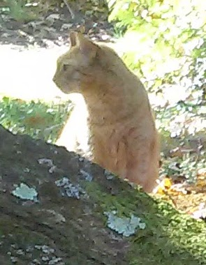

Education
My education has been something remarkable. While I had a rather traditional school life up through 3rd grade,
it became weird after that. Starting 4th grade I attended very little school, usually just a month or two per year.
This was because of my families travels and my home switching between my mom and my dad.
I was supposed to be home schooled the rest of the time, but that was almost never done to any type of compleation.
I ended up missing about 5 total years of school before I started again in my local high school.
Despite this, I never felt behind, and while there were always things I didn't get in some subjects,
I just picked them up along the way. For example, I never took Algebra 1 or US History,
despite both being requirements in my old school district. Through my two years at my LPHS,
I worked very hard to get to better school, as things were too easy there.
I hardley tried in my classes and still my GPA was 4.6.
Mourka

Family and Pets
As with most people I have two very different sides of my family. On my fathers side we have my Uncle Dick,
Aunt Anne, Cousin Marty (Son of Anne) and my half brother who is in his mid 40s and his two kids: Kinsley and Carson.
On my mothers side there is my half aunt Kady and her two kids: Oliver and Lydia.
But of course more important than family are our pets. For me this was Mourka.
He was the friendliest cat you ever knew, and was so sociable that people around the neighborhood knew him but not us!
Unfortunatly it was this sociability that led him to follow someone in to a garage in the middle of winter and get stuck.
He ended up dying from the cold.
My Travels
During the time I was not at school regularly, I was traveling. My first real travel was through France and Spain with my mother.
We even ended up staying there for a about a month, living in a building with a dirt floor.
The next year I started traveling with my dad by sail. We began on the eastern coast of the US,
going up to P town and seeing everything along the way.
But the really exciting stuff began when we headed for the Caribbean.
We spent quite a lot of time in the USVI, I even went to school there for a little while.
We proceeded down the Caribbean chain, spening a few weeks at each island before moving on to the next.
This was by far the best part of my life. Everything was beautiful. Life was happy.
We continued from Grenada, the last of the West Indies, and headed to Curaco, where the boat stayed for a long time.
When we finally had the time, we set sail again, northward to Haiti.
We spent about a month on an island off the south coast of Haiti called Île-à-Vache. It was amazing.
We continued on to the Bahammas were we bounced around islands for a little while running away from hurricanes.
Then finally we set sail for the 8 day journey back home.
Raven Under Full Sail

Favorite things
Some my personal favorite things include:
- Youtube
- Classic Films
- BTTF
- Whatever strange piece of music is stuck in my head that day
Political/Religious Beliefs
I am an Atheist.
I don't believe in a God or higher power because to do so would be to call in to question my understanding of reality.
It would call it in to question without valid evidence to do so. Even when there is valid evidence for my current understanding.
But anyway, on to politics.
I am a registered Democrat, but I find the party is driffting away from the ideals for which I originally prescribed to it for:
namley, progressivism, liberalism, and egalitarism. I find that too often Democrats are playing identity politics.
They think of the groups, men, women, blacks, latios, whites as cohorts that all face the same problems and need the same solution,
instead of thinking of people as just that, people, individuals.
Atheism

Social Media info
I don't really use social media, its not reallymy thing.
I usually comunicate by text/email (I know How old fashioned).
All that information is in the footer.